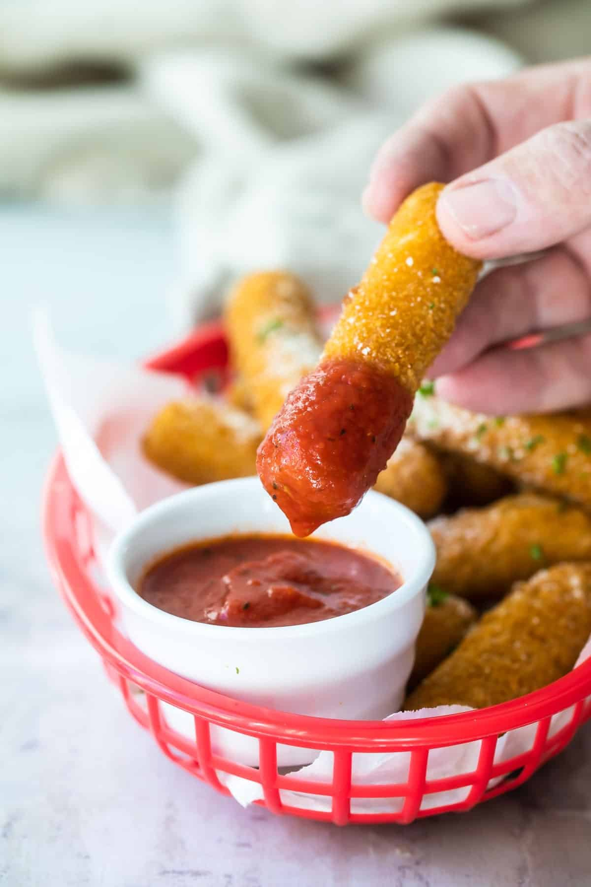
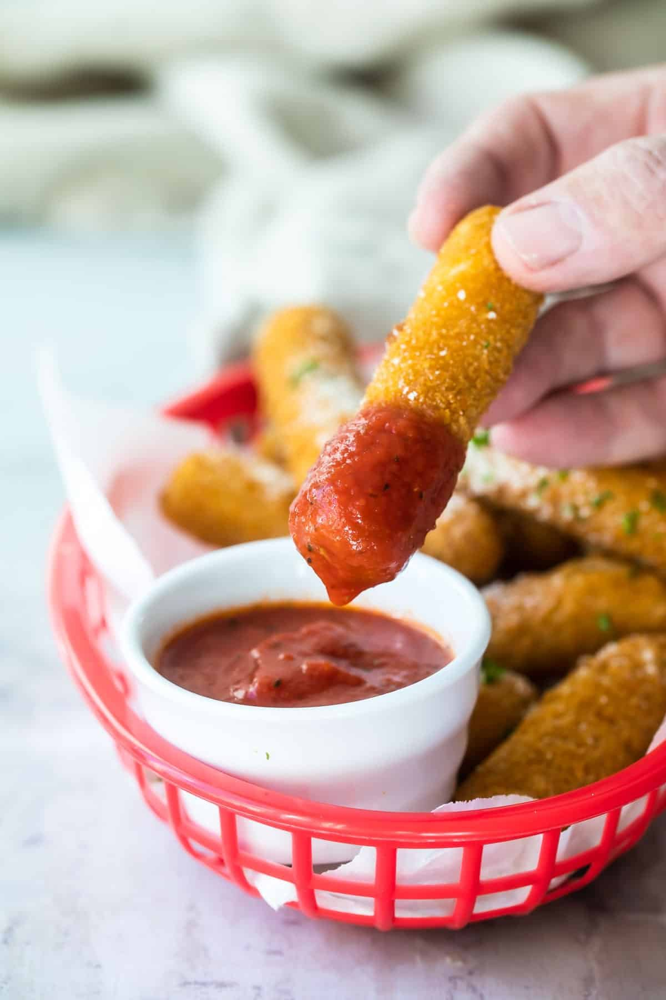

Fresh tomatoes, mozzarella, and basil drizzled with balsamic glaze.

Gooey and melty on the inside and golden and crunchy on the outside, they are absolutely addictive!
a delicateness specializing in dressed meats and cheese
Fresh tomatoes, mozzarella, and basil drizzled with balsamic glaze.
Gooey and melty on the inside and golden and crunchy on the outside, they are absolutely addictive!
a delicateness specializing in dressed meats and cheese
Salmon fillet seasoned and grilled to perfection, served with lemon butter sauce.

This truffle pasta recipe features tender noodles tossed in a creamy Parmesan truffle sauce.
Tender mushrooms in a rich and creamy garlic sauce come together as a perfect topping for juicy steaks!
Assorted fruits and marshmallows served with rich chocolate fondue.

A delicious dessert made with juicy strawberries, topped with a buttery crumble. The strawberries are roasted to intensify their flavor and create a soft, jam-like texture.
.webp)
Tunisian sweeteness made of biscuits, jam and whipped cream.